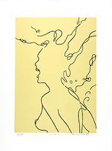
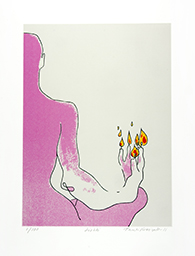
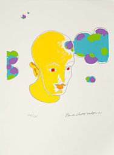
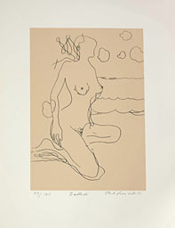
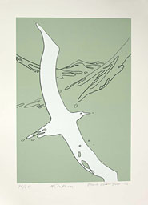
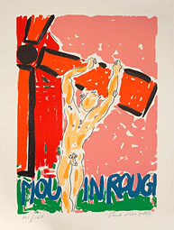
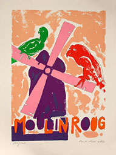
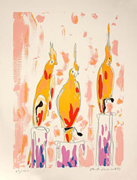
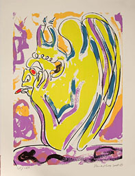

|  UUSI SEIREENI Serigrafia, 2011 Vedosmäärä: 75 Kuva-ala: 29 x 41 cm Tuotenumero: 88 Hinta: 320 € |  UUSI LIEKKI Serigrafia, 2011 Vedosmäärä: 100 Kuva-ala: 33 x 45 cm Tuotenumero: 89 Hinta: 320 € |  ONNELLINEN PRINSSI Serigrafia, 2001 Vedosmäärä: 125 Kuva-ala: 36 x 33 cm Tuotenumero: 51 Hinta: 240 € |
|  BALLADI Serigrafia, 1999 Vedosmäärä: 125 Kuva-ala: 29 x 42 cm Tuotenumero: 54 Hinta: 240 € |  ALBATROSSI (LOPPUUNMYYTY) Serigrafia, 2005 Vedosmäärä: 75 Kuva-ala: 39 x 55 cm Tuotenumero: 57 Hinta: 280 € |  MOULIN ROUGE I Litografia, 1989 Vedosmäärä: 150 Kuva-ala: 45 x 63 cm Tuotenumero: 59 Hinta: 350 € |
|  MOULIN ROUGE II Litografia, 1989 Vedosmäärä: 150 Kuva-ala: 45 x 63 cm Tuotenumero: 60 Hinta: 350 € |  NOTRE DAME I Litografia, 1989 Vedosmäärä: 150 Kuva-ala: 47 x 65 cm Tuotenumero: 61 Hinta: 350 € |  NOTRE DAME II Litografia, 1989 Vedosmäärä: 150 Kuva-ala: 45 x 63 cm Tuotenumero: 62 Hinta: 350 € |
Yllämainitut hinnat ovat lehtenä, sis.alv. Kehystysneuvoja kauttamme. Ota yhteyttä sähköpostitse ja pyydä esittelyä tai tilaa suoraan.